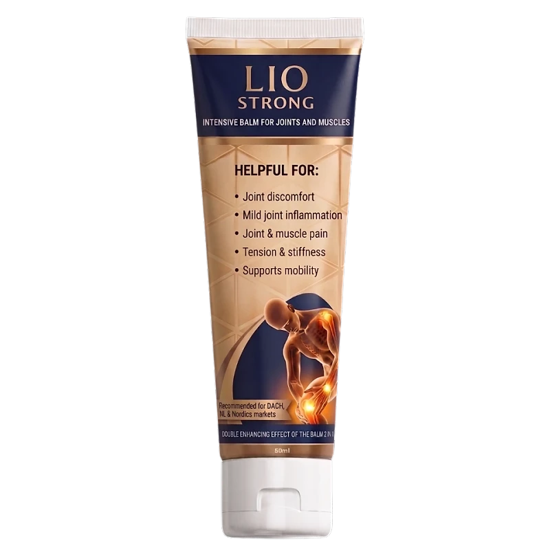
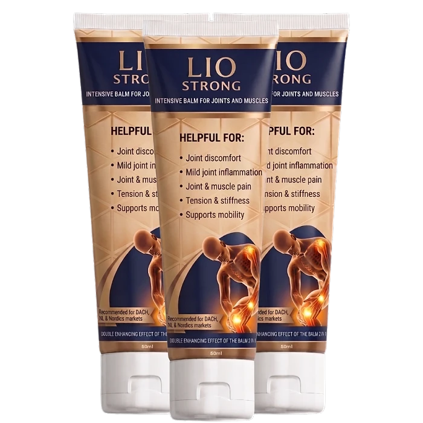

Was ist Lio Strong und wie wirkt es?
Lio Strong ist eine Creme zur äußerlichen Anwendung, die auf dem Etikett als „Intensive Balm for Joints and Muscles“ bezeichnet wird, also als intensiver Balsam für Gelenke und Muskeln. Eine Tube enthält 50 ml. Laut der offiziellen Website ist Lio Strong eine topische Gelenkcreme für den täglichen Komfort und eine einfache Anwendung.
Die Website beschreibt Lio Strong als Pflege für Bereiche, die sich steif oder überbeansprucht anfühlen, etwa Knie, Schultern, Nacken, Rücken, Ellenbogen oder Hände. Die Creme soll diese Bereiche im Laufe des Tages gepflegter wirken lassen und eine praktische Ergänzung der täglichen Beweglichkeitsroutine sein. Laut Etikett ist der Balsam auf eine doppelte Wirkung ausgelegt („2 in 1“) und wird ausdrücklich für den deutschsprachigen Raum, die Niederlande und die nordischen Länder empfohlen.
Das Prinzip beruht nach Angaben des Herstellers auf einer Kombination aus kühlenden, wärmenden und pflanzlichen Inhaltsstoffen. Menthol, Kampfer, Methylsalicylat und Capsicum sollen ein deutlich spürbares Warm-Kalt-Gefühl auf der Haut erzeugen. Dazu kommen Pflanzenextrakte wie Beinwell (Symphytum officinale) und Rosskastanie sowie ätherische Öle aus Eukalyptus, Sibirischer Tanne, Strandkiefer und Zitronenschale.
Laut Website lässt sich die Creme leicht verteilen und zieht schnell ein. Sie ist für Erwachsene gedacht, für Männer und Frauen, und eignet sich nach Angaben des Herstellers für die Anwendung zu Hause, bei der Arbeit oder nach körperlicher Aktivität. Hergestellt wird sie nach europäischen Qualitäts- und Sicherheitsstandards für topische Pflegeprodukte.
Der Hersteller weist selbst darauf hin, dass die Informationen zu den Inhaltsstoffen nur der allgemeinen Beschreibung dienen und kein medizinisches Versprechen darstellen. Ergebnisse können variieren. Wer anhaltende Gelenk- oder Muskelbeschwerden, Schwellungen oder starke Schmerzen hat, sollte die Ursache zuerst ärztlich abklären lassen, bevor er zu einer Creme greift.
Lio Strong Inhaltsstoffe
Die offizielle Website nennt die vollständige Liste der Inhaltsstoffe. Als wirksame Bestandteile werden hervorgehoben:
Menthol: bekannt für sein kühlendes Gefühl auf der Haut und häufig in Formeln für den Komfort nach langen Tagen oder Bewegung enthalten.
Kampfer: wird oft in Cremes und Balsamen verwendet, die ein erfrischendes, kühlend-wärmendes Gefühl erzeugen.
Beinwellblatt-Extrakt (Symphytum officinale): ein pflanzlicher Inhaltsstoff mit traditioneller Verwendung in hautpflegenden Mischungen.
Rosskastaniensamen-Extrakt (Aesculus hippocastanum): wird in Körperpflegeprodukten für ein Gefühl von Frische in müden Bereichen eingesetzt.
Capsicum-Harz und Methylsalicylat: tragen laut Website zum wärmenden Teil des Warm-Kalt-Gefühls bei.
Außerdem enthalten sind Eukalyptusöl, Sibirisches Tannenöl, Strandkiefernöl, Zitronenschalenöl und Niacinamid. Als Grundlage dienen unter anderem Wasser, Alkohol, Glycerin, Paraffinöl und Propylenglykol. Mengenangaben zu den einzelnen Bestandteilen veröffentlicht die Website nicht.
Weitere Hilfsstoffe sind PEG-40 hydriertes Rizinusöl, Phenoxyethanol und Ethylhexylglycerin als Konservierungssystem sowie Carbomer, Xanthan und Triethanolamin für die Konsistenz der Creme. Wer auf ätherische Öle, Salicylate oder einen dieser Stoffe empfindlich reagiert, sollte die Liste vor dem Kauf vollständig lesen. Die gesamte Zutatenliste finden Sie auf der Inhaltsstoffseite der offiziellen Website.
Lio Strong Nebenwirkungen
Lio Strong ist laut der offiziellen Website nur für die äußerliche Anwendung bestimmt. Eine eigene Liste von Nebenwirkungen veröffentlicht der Hersteller nicht, gibt aber in den häufig gestellten Fragen mehrere Hinweise zur Verträglichkeit.
Die Creme soll nicht auf gereizter oder verletzter Haut angewendet werden. Kontakt mit Augen und Schleimhäuten ist zu vermeiden. Nicht verwenden sollten sie Personen, die empfindlich auf Menthol, Kampfer, Salicylate, ätherische Öle oder einen der anderen aufgeführten Inhaltsstoffe reagieren. Gerade Methylsalicylat ist für Menschen mit einer Salicylat- oder Aspirin-Unverträglichkeit ein wichtiger Punkt.
Bei empfindlicher Haut empfiehlt der Hersteller einen Patch-Test: zuerst eine kleine Menge auf eine kleine Stelle auftragen und abwarten, wie die Haut reagiert, bevor die Creme großflächiger verwendet wird. Das kräftige Warm-Kalt-Gefühl ist gewollt, eine starke Rötung, Brennen oder Juckreiz dagegen ein Zeichen, die Anwendung zu beenden.
Wer schwanger ist, stillt, unter 18 Jahre alt ist oder unter medizinischer Aufsicht steht, sollte laut Website vor der Anwendung medizinisches Fachpersonal fragen. Das gilt auch, wenn Sie verschreibungspflichtige Cremes oder schmerzlindernde Produkte auf demselben Bereich verwenden.
Waschen Sie sich nach dem Auftragen die Hände, damit keine Creme in die Augen gelangt. Tragen Sie die Creme außerdem nicht direkt vor dem Duschen mit heißem Wasser oder unter einem Wärmepflaster auf.
Lio Strong Dosierung
Laut der offiziellen Website wird Lio Strong so angewendet: Eine kleine Menge auf saubere, trockene Haut auftragen und in den gewünschten Bereich einmassieren, bis die Creme eingezogen ist. Anschließend die Hände waschen, sofern nicht die Hände selbst behandelt werden.
Die Website beschreibt die Anwendung in vier Schritten: direkt auf den Zielbereich auftragen, das kühlende und wärmende Gefühl wahrnehmen, die Creme einziehen lassen und sie regelmäßig in die tägliche Routine einbauen, zum Beispiel vor der Bewegung, nach einer Aktivität oder am Ende eines langen Tages.
Eine feste Anzahl von Anwendungen pro Tag nennt die Website nicht. Sie verweist stattdessen auf die Anweisungen auf der Verpackung. Wie lange eine Tube reicht, hängt laut Hersteller davon ab, wie oft und auf wie großen Flächen sie verwendet wird. Die meisten Kunden tragen sie täglich auf ein oder zwei Bereiche auf, und die Pakete sind auf etwa 30 Tage pro Tube ausgelegt.
Lio Strong ist für die äußerliche Anwendung als Teil einer regelmäßigen Selbstpflege gedacht. Wer empfindliche Haut oder eine Erkrankung hat, sollte vor einer längeren Anwendung einen Arzt fragen.
Nur für Erwachsene. Bewahren Sie die Tube außerhalb der Reichweite von Kindern auf und tragen Sie die Creme nicht auf offene Wunden auf.
Lio Strong – Rückerstattung
Die offizielle Website wirbt mit einer 14-tägigen Geld-zurück-Garantie. In den häufig gestellten Fragen heißt es, dass Bestellungen innerhalb von 14 Tagen ohne Fragen zurückgesendet werden können und dass die volle Rückerstattung für ungeöffnete Produkte gilt.
Die Seite „Versand & Rückgabe“ beschreibt zusätzlich das gesetzliche Widerrufsrecht von 14 Kalendertagen ab Erhalt der Ware. Für versiegelt gelieferte Produkte gilt eine Ausnahme: Wurde das Hygienesiegel nach der Lieferung entfernt, besteht kein Widerrufsrecht für diese Einheit. Enthält eine Bestellung mehrere Tuben, kann jede Tube mit intaktem Siegel zurückgegeben werden.
Für die Rückgabe schreiben Sie innerhalb der Frist eine E-Mail an den Kundenservice mit Bestellnummer, Namen und den Artikeln, die Sie zurückgeben möchten. Laut Website antwortet der Kundenservice innerhalb eines Werktages mit den Rücksendeanweisungen. Die Rücksendeadresse liegt in Moordrecht in den Niederlanden.
Bei einem Widerruf tragen die Käufer die unmittelbaren Kosten der Rücksendung, bei fehlerhafter oder falsch gelieferter Ware der Verkäufer. Die Erstattung erfolgt innerhalb von 14 Tagen auf die ursprüngliche Zahlungsmethode, laut Website meist schon, sobald ein gültiger Rücksendenachweis vorliegt.
Lesen Sie vor der Bestellung die aktuellen Bedingungen auf der offiziellen Website, denn nur diese sind verbindlich, und bewahren Sie Ihre Bestellbestätigung auf. So können Sie eine Rückgabe innerhalb der Frist schnell und ohne Umwege einleiten.
Lio Strong – Wo kaufen?
Laut den häufig gestellten Fragen ist Lio Strong ausschließlich auf der offiziellen Website erhältlich. Dort finden Sie die aktuellen Pakete mit einer, zwei oder drei Tuben, die vollständige Liste der Inhaltsstoffe, die Allgemeinen Geschäftsbedingungen und die Kontaktdaten des Kundenservice.
Apotheken, Drogerien oder große Onlinehändler werden auf der Website nicht als Verkaufsstellen genannt. Angebote auf Marktplätzen oder Auktionsseiten stammen daher nicht unbedingt vom Hersteller, und es ist nicht sicher, ob dort die echte Creme verkauft wird.
Ein Kauf über die offizielle Website hat den Vorteil, dass die 14-tägige Geld-zurück-Garantie und das beschriebene Rückgabeverfahren gelten. Laut Website handelt es sich um einen Einmalkauf und nicht um ein Abonnement, es gibt also keine wiederkehrenden Zahlungen. Als Zahlungsarten nennt die Website unter anderem PayPal, Klarna und gängige Kreditkarten.
Achten Sie beim Besuch darauf, dass die Adresse liostronghealth.com lautet, und prüfen Sie die Bestellübersicht vor dem Abschluss. Bestellungen werden laut Website aus den Niederlanden mit Sendungsverfolgung verschickt, sodass Sie jederzeit sehen, wo sich Ihr Paket befindet.
Um sicherzugehen, dass Sie das Originalprodukt erhalten, besuchen die meisten Nutzer die offizielle Website.
Ist Lio Strong Betrug?
Nach den verfügbaren Informationen gibt es keinen Hinweis darauf, dass Lio Strong Betrug ist. Die Creme wird über eine eigene Website verkauft, auf der die vollständige Zutatenliste, die Anwendung, die Allgemeinen Geschäftsbedingungen, die Rückgaberegeln und das verantwortliche Unternehmen genannt werden.
Laut Impressum ist Lio Strong eine Marke der DIGIDIAMOND GROUP LTD mit Sitz in Harlow bei London, mit Handelsregisternummer und Umsatzsteuer-Identifikationsnummer. Der Kundenservice ist per E-Mail und Telefon von Montag bis Freitag erreichbar.
Positiv ist, dass die Website alle Inhaltsstoffe auflistet, klare Hinweise zur Verträglichkeit und zum Patch-Test gibt und den Kauf ausdrücklich als Einmalkauf ohne Abonnement darstellt.
Aufmerksamkeit verdienen zwei Punkte. Erstens werden keine Mengen der einzelnen Inhaltsstoffe genannt. Zweitens arbeitet die Bestellseite mit zeitlich begrenzten Angeboten und einem Countdown. Lassen Sie sich davon nicht unter Druck setzen und vergleichen Sie in Ruhe, welches Paket zu Ihrem Bedarf passt.
Vorsicht ist außerdem bei Angeboten außerhalb der offiziellen Website geboten, denn dort gelten die Garantie und die Rückgaberegeln des Verkäufers in der Regel nicht.
Wie bei jedem Pflegeprodukt sollten Sie realistische Erwartungen haben: Ergebnisse können variieren, und eine Creme ersetzt keine ärztliche Behandlung. Wer direkt auf der offiziellen Website bestellt und die Bedingungen liest, geht nach heutigem Stand kein besonderes Risiko ein.
Wer Produktdetails überprüfen oder die aktuelle Verfügbarkeit prüfen möchte, ist auf der offiziellen Lio Strong-Website am sichersten aufgehoben.
